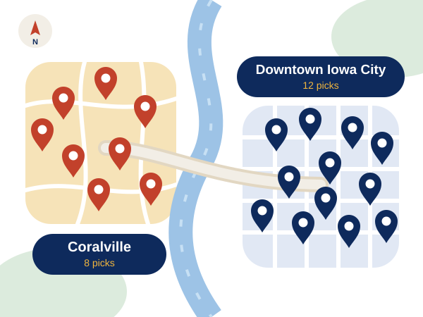

Healthy Restaurants Iowa City Students Swear By
You eat out most days. Same. Iowa City Healthy Eats is a student-written guide to the healthy restaurants Iowa City students actually go back to, from the healthy restaurants downtown Iowa City packs into a few walkable blocks to quick stops in Coralville. Every spot comes with the healthiest order, the price, the calories, and a high-protein pick, so finding healthy food Iowa City students crave takes about ten seconds.
- 20 restaurants
- 4 guides
- 0 meal prep

Four guides. Twenty spots. Zero guesswork.
Pick the one that matches your day. Each guide has five spots you won't find on the other three.
-

Before class
5 spots · open from 6:30 a.m.
Oat bowls, egg scrambles, and protein smoothies that beat a vending-machine muffin.
Breakfast places in Iowa City -

Under $10
5 spots · from $6.50
Lentil bowls, turkey chili, and fresh rolls that ring up under ten bucks. Payday is optional.
Cheap healthy food Iowa City -

After 10 p.m.
5 spots · open till 4 a.m.
Pho, poke, and grilled fish tacos for when the only other option is a greasy slice.
Late night food Iowa City -

High protein
5 spots · 58 to 78 g protein
Gym-day plates with the macros spelled out. Your meal prep can take the week off.
Healthy high protein meals Iowa City
How to Use This Guide
Four steps. No calorie math required.
- Pick your guide. Breakfast, budget, late night, or protein. Go with whatever kind of day you're having.
- Order the healthiest pick. It's the most balanced meal on the menu, with the price, calories, and protein right under it.
- Gym day? Go high-protein. Every spot has a second order built for lifters, runners, and rowers.
- Order it exactly as written. Smart swaps, like dressing on the side, are already baked in.
How We Pick the Healthy Restaurants Iowa City Students Trust
Every spot has to pass four tests before it makes the list. No exceptions.
- Real vegetables. At least two servings of vegetables, beans, or fruit in the healthiest order.
- Real protein. 15 grams or more, so you're not hungry again by 3 p.m.
- Under 650 calories. Every healthiest order lands between 390 and 610.
- Nothing deep-fried. Grilled, roasted, steamed, or fresh. That's the deal.

Who's Behind the Forks
Two University of Iowa students who eat out way more than they'd like to admit. Priya Halvorsen is a nutrition senior who reads menus like food labels. Marcus Delacroix-Beck is a junior on a club rowing team who needs a mountain of protein and has zero time to cook. They order every meal on this site themselves and refresh the guide every semester.
Start where your day is: breakfast places in Iowa City before an early class, cheap healthy food Iowa City students can afford when money's tight, late night food Iowa City kitchens still serve after 10 p.m., or healthy high protein meals Iowa City lifters love after a workout.